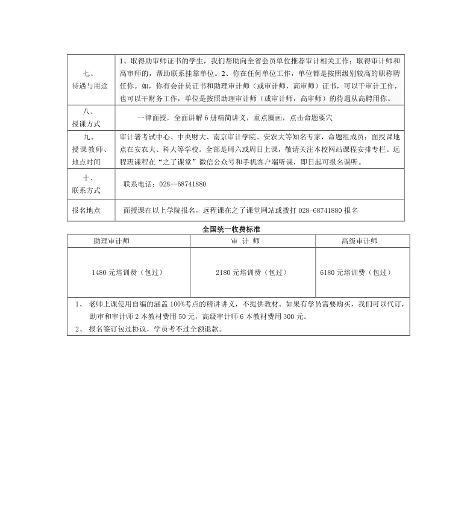
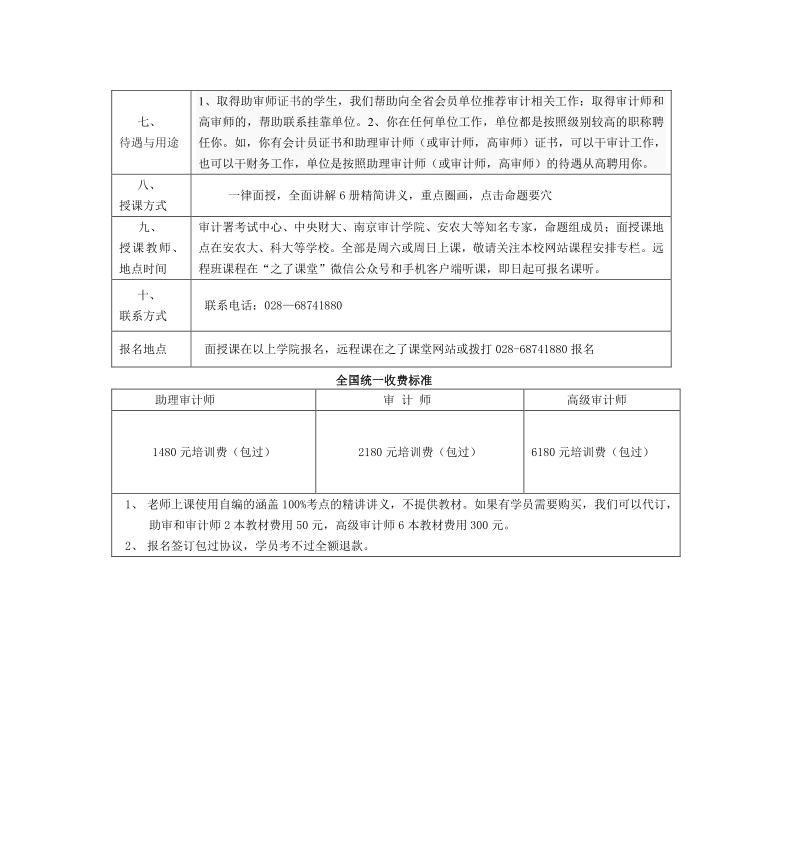

考试介绍
全国审计专业技术资格考试一般安排在每年10月中旬举行，报名时间约为5月上旬。审计专业技术资格考试由审计署和人事部共同负责。审计署负责拟定考试科目，编写考试大纲，组织考试命题，实施考试工作，统一规划并组织或授权组织培训等工作。人事部负责审定考试科目、考试大纲和试题，会同审计署对考试工作进行检查、监督、制度和确定考试合格标准。各地的考试工作由当地审计部门和人事部门共同负责，具体职责分工，由各地协商确定。
对于审计专业技术初级资格和中级(审计师)资格实行全国统一考试制度。考试制度实行后，不再进行相应职务任职资格的评审工作。按规定通过全国统一考试获得资格的人员，表明其已具备担任相应审计专业技术职务的水平和能力，用人单位可根据工作需要，按照德才兼备的原则择优聘任。
考试题型
各科目试题均为客观题，用2B铅笔在答题卡上填涂作答。
考试科目
题型、题量(分值)
考试长度
客观
合计
单选
多选
案例分析题
审计专业相关知识
30（30）
20（40）
/
105（140）
2.5小时
说明：自2007年起，审计专业技术初、中级资格考试的题型将进行调整，《审计专业相关知识》和《审计理论与实务》科目考试取消混合选择题和判断题，仅设单项选择题、多项选择题和综合分析题(或案例分析题)，总题量与往年相当。
1.单项选择题，共30道，每道1分，从四项备选答案中选出一项正确的。
2.多项选择题，共20道，每道2分，从五项备选答案中选出二至四项正确的，全部选对得满分，在无多选、错选的情况下，选对一项得0.5分。
3.综合分析题(案例分析题)("审计专业相关知识"科目为综合分析题，"审计理论与实务"科目为案例分析题)，3个案例，每个案例包括5道小题，每小题2分，从四项备选答案中选出一项或多项正确的，全部选对得满分，有多项答案的小题在无多选、错选的情况下，选对一项得0.5分。
考试时间
考试内容
综合分析题
9:00－11:30
包括宏观经济学基础、企业财务管理、企业财务会计、法律
14:00－16:30
审计理论与实务
包括审计理论与方法、企业财务审计
根据2017年度专业技术人员资格考试工作计划，确定2017年审计师考试时间为10月22日。
2017年度专业技术人员资格考试工作计划
| 序号 | 专业名称 | 考试日期 | ||
|---|---|---|---|---|
| 1 | 咨询工程师（投资） | 4月15、16日 | ||
| 2 | 注册建筑师 | 一级 | 5月6、7、13、14日 | |
| 二级 | 5月6、7日 | |||
| 3 | 护士执业资格 | 5月6-8日 | ||
| 4 | 会计（初级） | 5月13-16日 | ||
| 5 | 计算机技术与软件（初级、中级、高级） | 5月20、21日 | ||
| 6 | 监理工程师 | |||
| 7 | 环境影响评价工程师 | |||
| 8 | 一、二、三级翻译专业资格（水平） | |||
| 9 | 卫生（初级、中级） | 5月20、21、27、28日 | ||
| 10 | 银行业专业人员职业资格（初级、中级） | 6月3、4日 | ||
| 11 | 机动车检测维修士、机动车检测维修工程师 | 6月10、11日 | ||
| 12 | 助理社会工作师、社会工作师 | 6月17、18日 | ||
| 13 | 一级注册计量师 | |||
| 14 | 土地登记代理人 | |||
| 15 | 会计（中级、高级） | 9月9、10日 | ||
| 16 | 一级建造师（10个专业） | 9月16、17日 | ||
| 17 | 注册测绘师 | |||
| 18 | 价格鉴证师（收尾考试） | |||
| 19 | 通信（初级、中级） | 9月23日 | ||
| 20 | 注册设备监理师 | 9月23、24日 | ||
| 21 | 注册核安全工程师 | |||
| 22 | 勘察设计行业 | 注册土木工程师 | 岩土 | 9月23、24日 |
| 港口与航道工程 | ||||
| 水利水电工程（5个专业） | ||||
| 注册电气工程师（2个专业） | ||||
| 注册公用设备工程师（3个专业） | ||||
| 注册化工工程师 | ||||
| 注册环保工程师 | ||||
| 注册结构工程师 | 一级 | |||
| 二级 | 9月24日 | |||
| 23 | 房地产估价师 | 10月14、15日 | ||
| 24 | 拍卖师（纸笔作答） | |||
| 25 | 执业药师（药学、中药学） | |||
| 26 | 出版（初级、中级） | 10月15日 | ||
| 27 | 房地产经纪人协理、房地产经纪人 | 10月21、22日 | ||
| 28 | 造价工程师（土建、安装） | |||
| 29 | 矿业权评估师 | |||
| 30 | 注册城市规划师 | |||
| 31 | 审计（初级、中级、高级） | 10月22日 | ||
| 32 | 统计（初级、中级、高级） | |||
| 33 | 银行业专业人员职业资格（初级、中级） | 10月28、29日 | ||
| 34 | 注册验船师（船舶和海上设施） | |||
| 35 | 注册安全工程师 | |||
| 36 | 经济（中级） | 11月4日 | ||
| 37 | 经济（初级） | 11月5日 | ||
| 38 | 一、二、三级翻译专业资格（水平） | 11月4、5日 | ||
| 39 | 资产评估师 | |||
| 40 | 计算机技术与软件（初级、中级、高级） | 11月11、12日 | ||
| 41 | 一级注册消防工程师 | |||
| 42 | 税务师 | |||
| 43 | 拍卖师（实际操作） | 11月18、19日 | ||
| 44 | 专业技术人员计算机应用能力考试 | 各地自行确定 | ||
报名流程、报名时间
报名时间：2017年6月30日前，在当地人事考试网报名
流程：参加审计专业技术资格考试由本人提出申请，单位审核批准后，携带有关证件到当地考试管理机构报名。
经资格审查合格后，发给准考证。考生凭准考证和身份证在规定的时间和地点参加考试。中央、国务院各部门及其所属单位人员参加考试，实行属地管理原则。
准考证打印
考生可凭报名时获取的账号和密码登录审计考试网站自行打印准考证。2017年准考证打印时间陆续公布，考生可查看2017年准考证打印时间。
关于报名时间及报名的相关事项仍由当地人事考试网或中国审计数字在线网公布，详细官方地址如下：|
地 区 |
各地官方网站 |
| 【全 国】 | 中国审计数字在线网 |
| 【北 京】 | 北京人事考试网 |
| 【天 津】 | 天津市审计局 |
| 【上 海】 | 上海市职业能力考试网 |
| 【江 苏】 | 各地人事考试院(中心)或各市审计局 |
| 【浙 江】 | 浙江人事考试网 |
| 【山 东】 | 山东市人事考试信息网 |
| 【福 建】 | 福建省审计厅 |
| 【广 西】 | 广西壮族自治区审计厅 |
| 【江 西】 | 江西人事考试网 |
| 【安 徽】 | 安徽人事考试网 |
| 【广 东】 | 广东省人事考试局专业资格考试网 |
| 【海 南】 | 海南省人力资源开发局 |
| 【辽 宁】 | 辽宁人事考试网 |
| 【吉 林】 | 吉林省人事考试中心网站 |
| 【黑龙江】 | 黑龙江省人事考试网 |
| 【内蒙古】 | 内蒙古人事考试网 |
| 【山 西】 | 山西审计局 |
| 【湖 北】 | 湖北人事考试网 |
| 【湖 南】 | 湖南省审计厅 |
| 【河 北】 | 河北省人事考试中心 |
| 【河 南】 | 河南省人事考试中心 |
| 【重 庆】 | 重庆市人力资源和社会保障局网站 |
| 【陕 西】 | 陕西省审计厅 |
| 【贵 州】 | 贵州省审计厅 |
| 【云 南】 | 云南人事考试网 |
| 【四 川】 |
四川人事考试网 |
| 【兵 团】 | 新疆生产建设兵团人事考试中心 |
| 【宁 夏】 | 宁夏人事考试中心网站 |
| 【甘 肃】 | 甘肃省人力资源和社会保障厅 |
| 【新 疆】 | 新疆人事考试中心 |
| 【青 海】 | 青海审计网 |
| 【西 藏】 | 审计考试网 |
 
